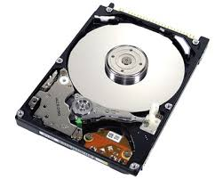

Hårddisk
På hårddisken lagras all information. Det ska även finnas kvar efter att datorn har stängts av. En hårddisk innehåller en eller flera olika roterande skivor med ett magnetiskt material. En läs arm rör sig över skivan och skriver eller läser när rätt ställe på skivan befinner sig under läshuvudet. Se på bilden ovan. Men det finns även en ny variant som kallas för ssd som står för solid state drive. Den har samma funktion som en hårddisk men skillnaden är att den inte har några rörliga delar, istället är de uppbyggda på något som kallas flash teknik.